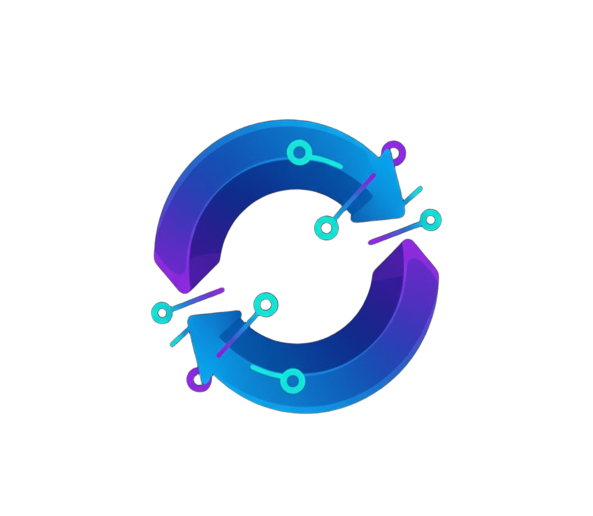
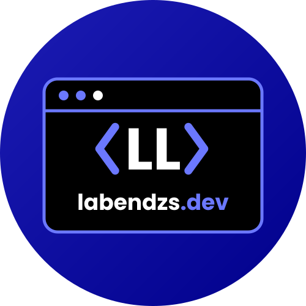
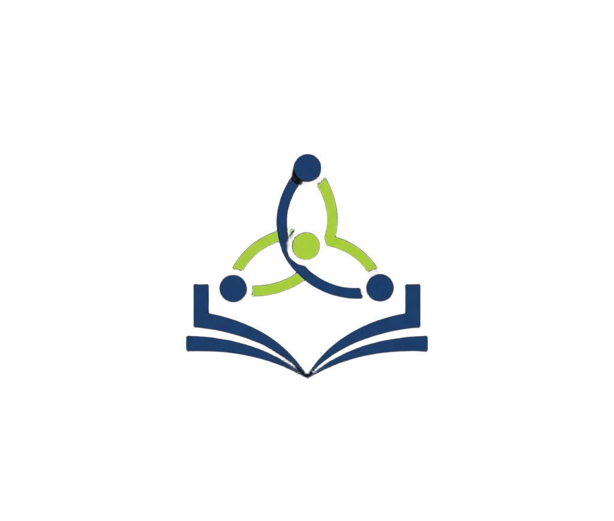
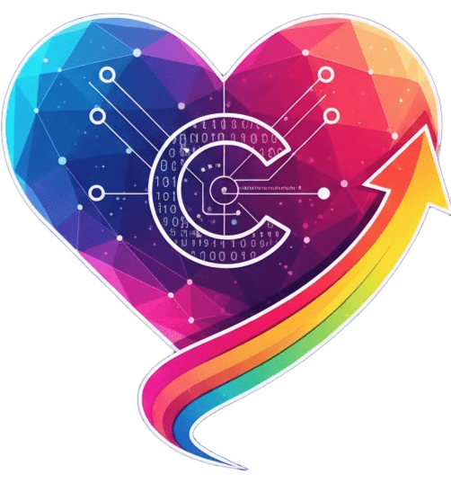

Jogo da Frase Invertida
Simula um pequeno jogo onde você deve acertar a maior quantidade de palavras possíveis digitando ao contrário, com um sistema de login em PHP e MySQL.
- PHP
- MySQL

Estudante de Análise e Desenvolvimento de Sistemas.
Desenvolvo projetos acadêmicos como os que estão logo abaixo, usando estas tecnologias:

Simula um pequeno jogo onde você deve acertar a maior quantidade de palavras possíveis digitando ao contrário, com um sistema de login em PHP e MySQL.

Aplicação em linguagem C que utiliza listas encadeadas para armazenar, manipular e exibir dados de eventos e participantes.

Aplicação que simula um sistema de triagem e atendimento hospitalar baseado no Protocolo de Manchester, escrita em linguagem C.